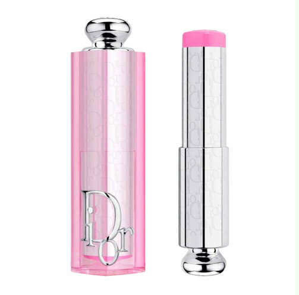
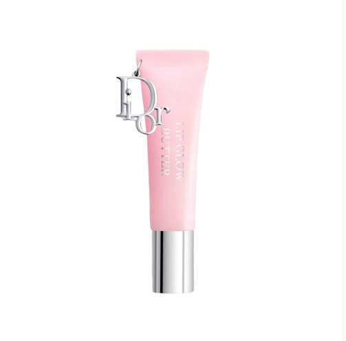
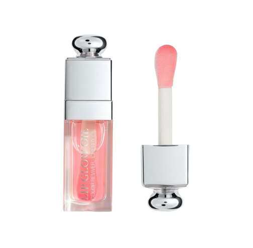
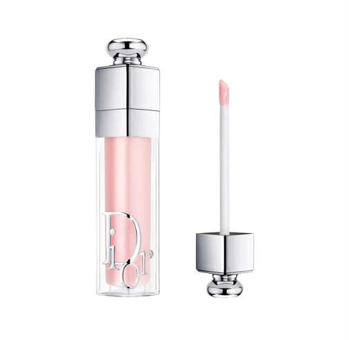

Lips Description
CDior Addict Lip Glow

The Iconic Tinted Lip Balm by Dior
Dior Addict Lip Glow is the iconic Dior tinted lip balm that is the perfect combination of lip care and makeup.
Thanks to unique technology,* its formula reacts to the lips’ pH to reveal a “custom” color that enhances their glow while providing up to 48 hours of hydration.
CDior Addict Lip Glow Butter

The new gloss-in-balm infused with peptides and ceramides
The perfect combination of makeup and skincare to enhance the lips with juicy shine and a hint of color. Its buttery texture provides deep hydration and smooths the lips for 24 hours'.
CDior Addict Lip Glow oil

The Nourishing and Protective lip oil
Dior Addict Lip Glow Oil softens and revitalizes lips while enhancing them with a glossy finish. Its non-greasy, non-sticky texture pushes the boundaries of shine and creates a smoothing film that shapes the lips with a mirror-shine effect.
CDior Addict Lip Maximizer

The Nourishing and Protective lip oil
Dior Addict Lip Glow Oil softens and revitalizes lips while enhancing them with a glossy finish. Its non-greasy, non-sticky texture pushes the boundaries of shine and creates a smoothing film that shapes the lips with a mirror-shine effect.